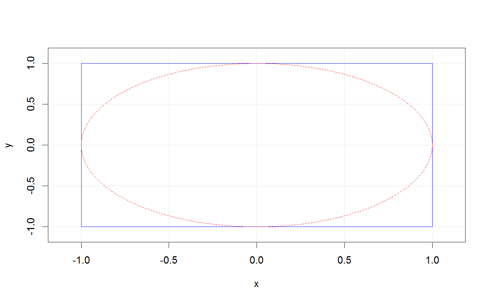
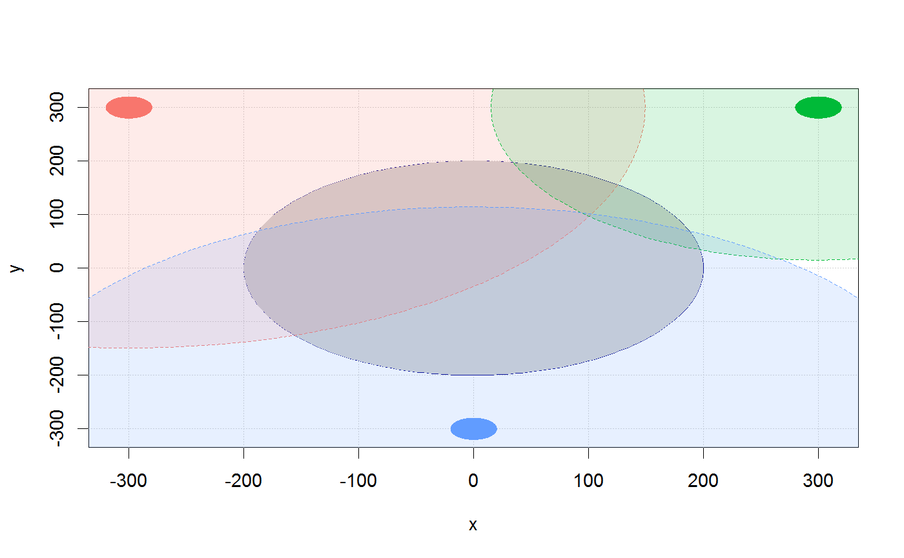

Plotting a circle
make_circle(center = c(0, 0), radius = 1, nb_step = 300, col = "darkblue", fill = NULL, lty = 1)
| center | A |
|---|---|
| radius | A |
| nb_step | A |
| col | A |
| fill | A |
| lty | A |
# Example 1 plot(NA, xlim = c(-1.1,1.1), ylim = c(-1.1,1.1), xlab = "x", ylab = "y")grid()make_circle(col = "red", lty = 2)# Example 2 cols = hcl(h = seq(15, 375, length = 4), l = 65, c = 100)[1:3] cols_trans = hcl(h = seq(15, 375, length = 4), l = 65, c = 100, alpha = 0.15)[1:3] plot(NA, xlim = c(-310, 310), ylim = c(-310, 310), xlab = "x", ylab = "y")grid()make_circle(fill = "lightgrey", radius = 200, lty = 1)make_circle(radius = 20, center = c(-300, 300), col = cols[1], fill = cols[1])make_circle(radius = 20, center = c(300, 300), col =cols[2], fill = cols[2])make_circle(radius = 20, center = c(0, -300), col = cols[3], fill = cols[3])make_circle(radius = 449.2136, center = c(-300, 300), col = cols[1], fill = cols_trans[1], lty = 2)make_circle(radius = 284.8427, center = c(300, 300), col = cols[2], fill = cols_trans[2], lty = 2)make_circle(radius = 414.3106, center = c(0, -300), col = cols[3], fill = cols_trans[3], lty = 2)